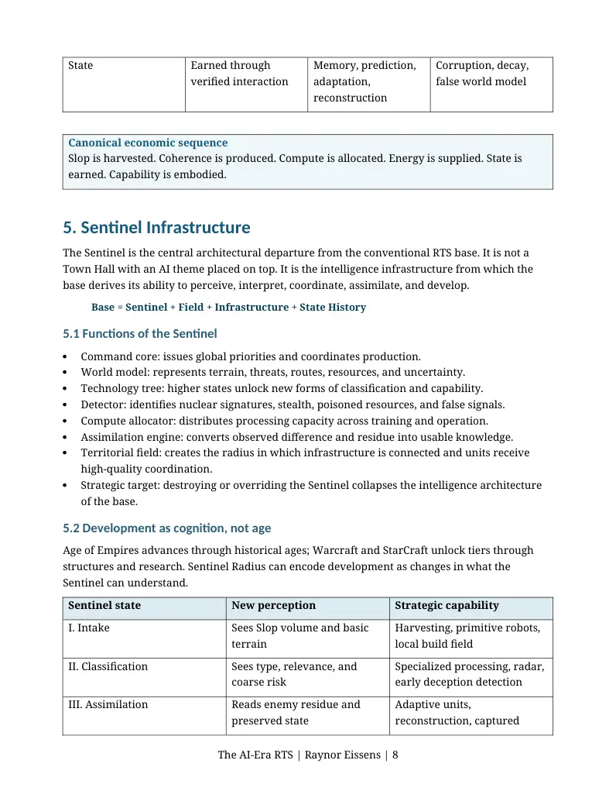
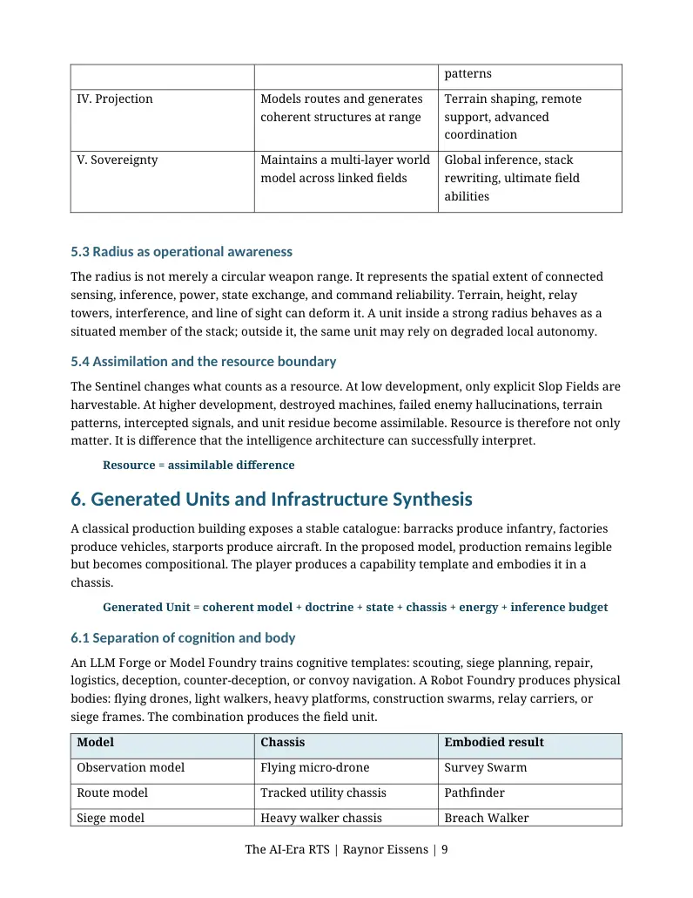
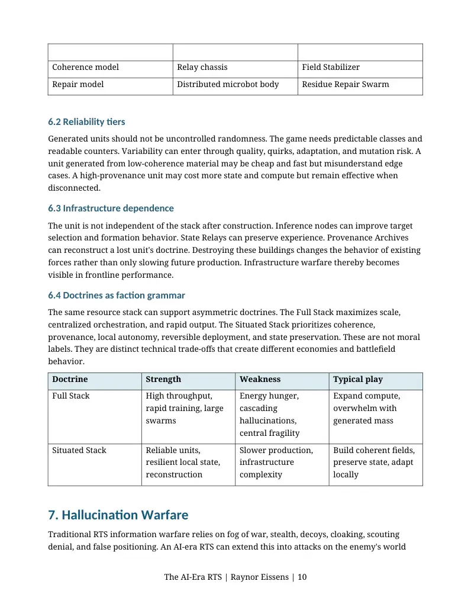

PDF page 1
THE AI-ERA RTS
From Tiberium to Slop
A Resource Theory for Real-Time Strategy Games in the Generative Era
Raynor Eissens
Preprint v1.0 | July 2026
DOI: 10.5281/zenodo.21292599
Reference implementation: Sentinel Radius
Central proposition
Classical RTS games harvest scarce matter. An AI-era RTS can harvest generated possibility -
converting abundant, unreliable output into coherent, embodied, and strategically situated
capability.
The AI-Era RTS | Raynor Eissens | 1
PDF page 2
Abstract
Real-time strategy games have historically organized play around the extraction and conversion of scarce material resources. Spice, Tiberium, minerals, gas, food, wood, gold, stone, and mass determine territorial expansion, production, technological development, and military capability. Artificial intelligence has been used extensively to control opponents, benchmark agents, generate content, and assist game development, but the material conditions of generative AI have rarely been translated into the fundamental playable grammar of the RTS genre itself. This paper proposes an AI-era RTS paradigm in which generative abundance replaces material scarcity as the primary economic substrate. Players harvest abundant but unreliable generated output - termed Raw Slop - and convert it through coherence, computation, energy, state, provenance, doctrine, and embodiment into dependable strategic capability. The proposal defines five linked resources: Slop as generative possibility; Coherence as stabilized usability; Compute as processing capacity; Energy as physical operation; and State as earned situational knowledge. It further proposes the Sentinel as an evolving intelligence infrastructure that replaces the conventional headquarters, functioning as command core, world model, detector, technology tree, compute allocator, assimilation engine, territorial field, and final strategic target. Units are generated embodiments rather than fixed outputs of a barracks: models and doctrines are combined with compute, energy, materials, state, and chassis. Hallucination becomes a weapon directed at perception, classification, routing, and operational state. Finally, the instant superweapon is replaced by a slow physical Corebreaker convoy whose route must be cleared, defended, deceived, or intercepted in real time. Sentinel Radius is presented as a reference implementation of this integrated design model. The paper does not claim invention of each isolated mechanic; it argues that their synthesis forms a distinctive resource and warfare grammar for real-time strategy in the generative era.
Keywords: real-time strategy; RTS; generative AI; generative abundance; AI slop; resource design; coherence; compute; state; datacenters; generated units; hallucination warfare; embodied logistics; Sentinel Radius; Slop Resource Principle.
1. Introduction
The real-time strategy genre is often described through familiar verbs: gather, build, expand,
scout, produce, attack, defend, and advance. Beneath faction asymmetry and tactical diversity
sits a persistent economic grammar. Valuable matter exists on the map in limited deposits.
Worker units extract it, transport or credit it to a base, and convert it into buildings, technologies,
and military units. Position matters because resources are spatial. Tempo matters because
extraction takes time. Conflict emerges because deposits are finite, exposed, and unevenly
distributed.
This grammar was extraordinarily productive. Dune II organized territorial conflict around
spice. Command & Conquer made Tiberium both economy and world-transforming substance.
Warcraft and Age of Empires diversified physical materials into food, lumber, gold, and stone.
StarCraft compressed the economy into minerals and vespene gas while greatly expanding
The AI-Era RTS | Raynor Eissens | 2
PDF page 3
factional differences in production. Supreme Commander elevated mass and energy into an
industrial flow economy. These systems vary, but they share a premise: strategic capability
originates in scarce, extractable matter.
Generative AI introduces a different material condition. Its characteristic problem is not only
scarcity. It is output abundance. A single model can produce a stream of text, images, audio, code,
plans, assets, classifications, and synthetic examples at low marginal effort. Yet abundance is not
identical to usefulness. Output may be generic, inconsistent, unverified, context-poor, repetitive,
unsafe, or false. The new bottleneck therefore shifts upward from production toward selection,
verification, coherence, contextualization, energy, compute, and reliable embodiment.
This paper asks a design question: what happens if an RTS does not merely depict AI, use AI for
non-player behavior, or generate decorative assets, but instead rebuilds its economy, base
architecture, unit production, information warfare, and superweapon logistics around the
conditions of generative AI?
Classical RTS: scarce matter -> extraction -> production -> military capability
AI-era RTS: generated abundance -> harvest -> coherence -> computation -> embodiment ->
field action
The proposal extends the Slop Resource Principle introduced in Three Ages of Digital Culture:
From Mechanical Reproduction to Generative Abundance. That earlier work argued that AI slop
can become playable material when moved from unbounded attention markets into bounded
rule systems. The present paper advances the argument from content layer to economic layer.
Slop is no longer merely what appears inside a game. It becomes what the player gathers,
processes, risks, weaponizes, and turns into organized capability.
Sentinel Radius functions as the reference implementation. It is not identical to the general
paradigm. The paradigm is the AI-era RTS; Sentinel Radius is one possible game that makes the
theory spatial, visible, and testable. Its defining elements are Slop Fields, Coherence Plants,
datacenters, fusion infrastructure, generated robotic units, hallucination warfare, an evolving
Sentinel as the base intelligence, and a slow Corebreaker whose physical journey prevents the
system from collapsing into an abstract spreadsheet simulation.
2. Historical RTS Resource Economies
2.1 Dune II: resource extraction as territorial tempo
Dune II helped establish the recognizable loop of base construction, unit production, and real-
time resource gathering. Spice is harvested from exposed fields, converted into credits, and spent
on buildings and units. The resource is spatial, exhaustible, and dangerous to collect. The player
does not possess abstract purchasing power independently of the map; economic capacity must
be extracted from contested terrain. This establishes a durable connection between map control
and production tempo.
The AI-Era RTS | Raynor Eissens | 3
PDF page 4
2.2 Command & Conquer: the resource as world substance
Command & Conquer deepened the resource fiction by making Tiberium more than a neutral
currency token. Tiberium is valuable, hazardous, spreading, and politically central. Harvesters
physically enter fields and return to refineries. The economy is therefore exposed to raiding, path
disruption, and territorial denial. Tiberium shows that an RTS resource can carry world-building
significance while retaining a legible economic function.
2.3 Warcraft and Age of Empires: differentiated material dependencies
Warcraft and Age of Empires divide the economy among multiple material categories. Food
supports population and unit production; wood enables buildings and infrastructure; gold
supports advanced units and technologies; stone concentrates defensive or monumental
construction. Multiple resources force allocation decisions. The player's economy becomes a
composition problem: not merely how much income exists, but whether its distribution matches
the intended build order and military doctrine.
2.4 StarCraft: compressed resources, asymmetric conversion
StarCraft and StarCraft II use minerals and vespene gas as the common economic substrate for
radically different factions. Blizzard's official StarCraft II guide describes these resources as the
materials required to research technology, build structures, and construct units. The important
design move is that shared resources do not imply shared production logic. Terran construction,
Zerg morphing, and Protoss warping convert the same economy through different
infrastructures. This is a key precedent for the present proposal: one resource stack can support
sharply asymmetric architectures.
2.5 Supreme Commander: continuous industrial flow
Supreme Commander reframes the economy as rates and storage rather than only discrete
purchases. Mass and energy flow through an industrial system. Production can stall when
consumption exceeds income; capacity planning becomes continuous. This anticipates a useful
aspect of an AI-era RTS, because compute and energy are naturally modeled as throughput and
allocation rather than as simple piles of currency.
2.6 The common grammar
Game family Primary resource logic Strategic bottleneck
Dune II Spice harvested from exposed
Territorial access and
fields
transport
Command & Conquer Tiberium harvested and
Field control, harvester
refined
safety, expansion
Warcraft / Age of Empires Multiple physical materials Worker allocation and age
progression
StarCraft Minerals and vespene gas Expansion timing and
The AI-Era RTS | Raynor Eissens | 4
PDF page 5
asymmetric conversion
Supreme Commander Mass and energy flow Throughput, storage, and
production balance
Across these families, strategic capability begins with scarce or rate-limited material. Even
fictional resources behave like matter: they occupy locations, can be depleted or denied, and
enter production through a predictable conversion system. The AI-era proposal does not reject
this grammar. It asks what happens when the foundational input is not a naturally scarce
material but an excessive stream of generated possibility.
3. From Scarcity to Generative Abundance
Generative abundance is the condition in which artifact production is no longer constrained
primarily by human authoring time. A model can synthesize many candidates rapidly, but the
generated instances vary in relevance, coherence, provenance, safety, and utility. The artifact
becomes cheap relative to the work required to decide whether it belongs, whether it is
trustworthy, and how it should be integrated.
Model + prompt/context -> many candidate outputs -> evaluation burden -> selection
scarcity
This changes the strategic metaphor. Classical resource systems ask the player to secure a limited
deposit. A generative resource system asks the player to manage an unstable surplus. The map
can contain Slop Fields that regenerate, mutate, copy nearby patterns, and overwhelm local
infrastructure when not managed. The field is valuable because it contains possibility, but
dangerous because possibility without coherence produces noise, false signals, malformed units,
and contaminated state.
3.1 Slop is not simply bad content
In this framework, Slop is a functional design term for abundant generated output with variable
reliability and weak contextual anchoring. It is deliberately not synonymous with worthless
output. Ore is not a sword; crude oil is not transportation; raw data is not knowledge. Likewise,
Raw Slop is not yet a unit or building. Its value lies in convertibility. The system-level
contribution is the conversion grammar.
3.2 The inversion of scarcity
Old scarcity: not enough material
New scarcity: not enough coherence, trust, energy, compute, and situated understanding
The inversion creates a different source of conflict. Players may fight over high-coherence
archives rather than merely high-volume fields. They may sabotage an opponent's provenance
chain, flood its Sentinel with low-relevance output, attack its energy grid, or force it to allocate
The AI-Era RTS | Raynor Eissens | 5
PDF page 6
compute away from training and toward verification. Economy and information warfare become
inseparable.
3.3 Bounded play as conversion field
The Slop Resource Principle depends on boundaries. In an open information environment,
excessive synthetic output can degrade attention and trust. In a game, clear rules can transform
abundance into legible choices. Sentinel Radius makes that transformation diegetic: the world
itself contains overgenerated material, and the player's intelligence infrastructure determines
whether that material becomes capability, waste, decoy, terrain, or threat.
4. A Resource Theory for the AI-Era RTS
The proposed economy contains five linked resources. They should not all behave as
interchangeable currencies. Each represents a different stage or constraint in the conversion of
generated possibility into field action.
4.1 Raw Slop: abundant possibility
Raw Slop is the primary harvestable substrate. It may appear as flickering image fragments,
unfinished architecture, contradictory text bands, synthetic ruins, duplicated silhouettes,
malformed machine parts, latent patterns, or unstable terrain. A Slop Harvester extracts volume,
but volume alone does not guarantee value.
S = (V, C, R, P, M)
A batch of Slop can be described by volume V, coherence C, relevance R, provenance P, and
mutation risk M. The player may see only coarse estimates until the Sentinel reaches higher
classification states. Early Sentinels perceive quantity; advanced Sentinels perceive structure and
risk.
4.2 Coherence: the refinery function
Coherence is not simply a second mined resource. It is produced by processing. A Coherence
Plant classifies, filters, aligns, deduplicates, verifies, and binds Raw Slop to a doctrine or use case.
It is the semantic equivalent of refining ore, but its output is dependable relation rather than
pure material.
Coherent Output = f(Raw Slop, filters, context, state, provenance, doctrine)
Players can choose low-latency coherence for speed or deep coherence for reliability. A rushed
batch may create cheap disposable drones with a high mutation rate. A carefully processed batch
may produce fewer units, but those units retain orders, coordinate locally, and resist
hallucination attacks.
4.3 Compute: allocatable cognition
Compute is produced by datacenters and consumed by training, inference, detection,
coordination, simulation, and verification. Unlike a conventional currency, compute is best
The AI-Era RTS | Raynor Eissens | 6
PDF page 7
modeled as capacity per second. The player allocates a finite processing budget among competing
functions.
C_total = C_training + C_inference + C_detection + C_coordination + C_verification
An aggressive player can divert compute into training to unlock a new capability threshold, but
existing units may lose inference quality. A defensive player can prioritize verification and
detection to resist hallucination warfare, but fall behind in unit generation. Datacenters
therefore become visible and vulnerable strategic organs.
4.4 Energy: the physical substrate
Energy powers datacenters, Robot Foundries, shields, the Sentinel Radius, transport networks,
and the Corebreaker. Fusion Reactors or other generators create capacity; grids distribute it.
Energy failure should not merely prevent purchases. It should degrade operation. A unit may
retain its chassis while losing remote inference, forcing it into local fallback behavior.
4.5 State: earned situational knowledge
State is the rarest and most distinctive resource because it is not mined. It is earned by observing,
scouting, surviving, preserving continuity, connecting Sentinels, verifying events, escorting
convoys, and recording outcomes. State represents what the system knows about the current
world and how confidently it knows it.
State_t+1 = State_t + observation + verified interaction + preserved residue - corruption -
decay
State can unlock route prediction, reconstruction, counter-deception, adaptive doctrines, and
unit memory. Destroying a unit need not erase its entire value if provenance and residue were
preserved. Conversely, a large army with weak State may be powerful but easily deceived.
4.6 Resource interaction
Resource Acquisition Primary use Failure mode
Raw Slop Harvested from
Candidate material,
Mutation, noise,
generative fields
temporary structures,
poisoning
low-cost units
Coherence Produced by filtering
Reliable models,
Latency and
and contextualization
structures,
processing cost
commands
Compute Generated by
Training, inference,
Overload and
datacenters
detection, verification
allocation conflict
Energy Generated and
Operation, mobility,
Brownout and
distributed physically
shields,
physical degradation
infrastructure
The AI-Era RTS | Raynor Eissens | 7
PDF page 8
State Earned through
Memory, prediction,
Corruption, decay,
verified interaction
adaptation,
false world model
reconstruction
Canonical economic sequence
Slop is harvested. Coherence is produced. Compute is allocated. Energy is supplied. State is
earned. Capability is embodied.
5. Sentinel Infrastructure
The Sentinel is the central architectural departure from the conventional RTS base. It is not a
Town Hall with an AI theme placed on top. It is the intelligence infrastructure from which the
base derives its ability to perceive, interpret, coordinate, assimilate, and develop.
Base = Sentinel + Field + Infrastructure + State History
5.1 Functions of the Sentinel
Command core: issues global priorities and coordinates production.
World model: represents terrain, threats, routes, resources, and uncertainty.
Technology tree: higher states unlock new forms of classification and capability.
Detector: identifies nuclear signatures, stealth, poisoned resources, and false signals.
Compute allocator: distributes processing capacity across training and operation.
Assimilation engine: converts observed difference and residue into usable knowledge.
Territorial field: creates the radius in which infrastructure is connected and units receive
high-quality coordination.
Strategic target: destroying or overriding the Sentinel collapses the intelligence architecture
of the base.
5.2 Development as cognition, not age
Age of Empires advances through historical ages; Warcraft and StarCraft unlock tiers through
structures and research. Sentinel Radius can encode development as changes in what the
Sentinel can understand.
Sentinel state New perception Strategic capability
I. Intake Sees Slop volume and basic
Harvesting, primitive robots,
terrain
local build field
II. Classification Sees type, relevance, and
Specialized processing, radar,
coarse risk
early deception detection
III. Assimilation Reads enemy residue and
Adaptive units,
preserved state
reconstruction, captured
The AI-Era RTS | Raynor Eissens | 8

PDF page 9
patterns
IV. Projection Models routes and generates
Terrain shaping, remote
coherent structures at range
support, advanced
coordination
V. Sovereignty Maintains a multi-layer world
Global inference, stack
model across linked fields
rewriting, ultimate field
abilities
5.3 Radius as operational awareness
The radius is not merely a circular weapon range. It represents the spatial extent of connected
sensing, inference, power, state exchange, and command reliability. Terrain, height, relay
towers, interference, and line of sight can deform it. A unit inside a strong radius behaves as a
situated member of the stack; outside it, the same unit may rely on degraded local autonomy.
5.4 Assimilation and the resource boundary
The Sentinel changes what counts as a resource. At low development, only explicit Slop Fields are
harvestable. At higher development, destroyed machines, failed enemy hallucinations, terrain
patterns, intercepted signals, and unit residue become assimilable. Resource is therefore not only
matter. It is difference that the intelligence architecture can successfully interpret.
Resource = assimilable difference
6. Generated Units and Infrastructure Synthesis
A classical production building exposes a stable catalogue: barracks produce infantry, factories
produce vehicles, starports produce aircraft. In the proposed model, production remains legible
but becomes compositional. The player produces a capability template and embodies it in a
chassis.
Generated Unit = coherent model + doctrine + state + chassis + energy + inference budget
6.1 Separation of cognition and body
An LLM Forge or Model Foundry trains cognitive templates: scouting, siege planning, repair,
logistics, deception, counter-deception, or convoy navigation. A Robot Foundry produces physical
bodies: flying drones, light walkers, heavy platforms, construction swarms, relay carriers, or
siege frames. The combination produces the field unit.
Model Chassis Embodied result
Observation model Flying micro-drone Survey Swarm
Route model Tracked utility chassis Pathfinder
Siege model Heavy walker chassis Breach Walker
The AI-Era RTS | Raynor Eissens | 9

PDF page 10
Coherence model Relay chassis Field Stabilizer
Repair model Distributed microbot body Residue Repair Swarm
6.2 Reliability tiers
Generated units should not be uncontrolled randomness. The game needs predictable classes and
readable counters. Variability can enter through quality, quirks, adaptation, and mutation risk. A
unit generated from low-coherence material may be cheap and fast but misunderstand edge
cases. A high-provenance unit may cost more state and compute but remain effective when
disconnected.
6.3 Infrastructure dependence
The unit is not independent of the stack after construction. Inference nodes can improve target
selection and formation behavior. State Relays can preserve experience. Provenance Archives
can reconstruct a lost unit's doctrine. Destroying these buildings changes the behavior of existing
forces rather than only slowing future production. Infrastructure warfare thereby becomes
visible in frontline performance.
6.4 Doctrines as faction grammar
The same resource stack can support asymmetric doctrines. The Full Stack maximizes scale,
centralized orchestration, and rapid output. The Situated Stack prioritizes coherence,
provenance, local autonomy, reversible deployment, and state preservation. These are not moral
labels. They are distinct technical trade-offs that create different economies and battlefield
behavior.
Doctrine Strength Weakness Typical play
Full Stack High throughput,
Energy hunger,
Expand compute,
rapid training, large
cascading
overwhelm with
swarms
hallucinations,
generated mass
central fragility
Situated Stack Reliable units,
Slower production,
Build coherent fields,
resilient local state,
infrastructure
preserve state, adapt
reconstruction
complexity
locally
7. Hallucination Warfare
Traditional RTS information warfare relies on fog of war, stealth, decoys, cloaking, scouting
denial, and false positioning. An AI-era RTS can extend this into attacks on the enemy's world
The AI-Era RTS | Raynor Eissens | 10

PDF page 11
model. A hallucination is operationally significant when it causes the Sentinel or its units to
represent the field incorrectly and act on that representation.
Operational damage = physical loss + state corruption + induced decision error
7.1 Perceptual hallucination
Perceptual attacks create false observations: phantom armies, duplicate convoys, synthetic
resource fields, fabricated nuclear signatures, or false construction activity. These attacks target
attention and force verification costs. Even when detected, they can be useful if they divert
compute or units.
7.2 Operational hallucination
Operational attacks alter classification or action. A defender may misclassify a civilian transport
as a Corebreaker, route interceptors toward a harmless decoy, or treat a damaged bridge as
passable. The attack does not need to control the unit directly; it only needs to corrupt the
assumptions under which the unit chooses.
7.3 Material hallucination
Material hallucinations temporarily instantiate unstable structures or terrain: a bridge that
persists for thirty seconds, a wall copied from a nearby pattern, an incomplete turret, a road
surface that collapses after the convoy passes, or a false building that provides no production.
Material hallucination makes generated output physically tactical while preserving its
unreliability.
7.4 State corruption and poisoning
The deepest attack introduces false information into persistent state. If accepted as provenance,
the error may survive beyond the immediate battle and contaminate route predictions, enemy
profiles, or unit doctrines. Counterplay requires redundant sensing, trusted archives, local
confirmation, and explicit uncertainty rather than a single universal detection spell.
7.5 Counter-hallucination systems
Provenance Archive: verifies origin and preserves trusted histories.
Redundant observation: requires agreement among multiple sensors.
Local autonomy: allows disconnected units to reject implausible global commands.
Coherence checks: spend compute to test whether a signal fits the field state.
Human or operator nodes: slower but high-trust confirmation channels.
Residue comparison: contrasts current claims with preserved physical traces.
The design challenge is fairness. Players must be able to understand why they were deceived and
how to respond. Hallucination warfare should create uncertainty, not arbitrary interface lying.
Visual language, confidence indicators, replay tools, and post-event provenance trails can make
epistemic combat legible.
The AI-Era RTS | Raynor Eissens | 11
PDF page 12
8. Embodied Logistics and the Corebreaker
The AI-era economy risks becoming excessively abstract. Compute allocation, state quality, and
model training can collapse into dashboards unless they are anchored in terrain, time, and
physical vulnerability. The Corebreaker provides that anchor.
8.1 The superweapon as journey
Construct -> route -> clear -> escort -> verify -> breach
The Corebreaker is a slow catastrophic convoy rather than an instant targeting ability. Once
launched, it must traverse the map toward the enemy Sentinel. Obstacles must be destroyed,
bridges created, paths verified, and blockades defeated. The attacking player manages the war
around the vehicle; the defender attacks its route, escort, energy supply, and world model.
8.2 Blast Corps-like route clearing within an RTS
The route is not a decorative animation. It is a playable logistics problem inspired by the urgency
of clearing a path for a moving catastrophe. The convoy may be difficult to stop directly but easy
to delay. Buildings, collapsed terrain, false bridges, minefields, interference zones, and enemy
fortifications all convert space into time pressure.
8.3 Intelligence accelerates; matter resists
The Corebreaker expresses the central tension of the design. Models can generate plans rapidly.
Datacenters can evaluate many routes. Hallucinations can fabricate alternatives. Yet the vehicle
still moves through physical distance. It requires energy, intact roads, escort mass, and time.
Exponential intelligence meets stubborn matter.
8.4 Multiple outcomes
A successful breach need not always mean nuclear destruction. Different doctrines can produce
different end states: physical annihilation, Sentinel shutdown, forced assimilation, radius
dissolution, or control-stack severance. The journey remains constant while the political and
systemic meaning of victory can vary.
9. Sentinel Radius as Reference Implementation
Sentinel Radius is proposed as the first reference implementation of the design grammar
developed in this paper. It combines the five-resource economy, Sentinel-centered bases,
generated embodied units, hallucination warfare, and a moving Corebreaker in a spatial real-
time battlefield.
9.1 Minimal vertical slice
1. One Sentinel per side with a visible operational radius.
2. One regenerating Slop Field and one Harvester.
The AI-Era RTS | Raynor Eissens | 12
PDF page 13
3. One Coherence Plant that converts Raw Slop into usable output.
4. One Fusion Reactor and one Datacenter producing energy and compute capacity.
5. One Model Forge and Robot Foundry producing a generated combat unit.
6. One hallucination ability: False Convoy Signal.
7. One slow Corebreaker with destructible obstacles and two viable routes.
8. Victory through reaching or disabling the enemy Sentinel.
9.2 Why the reference implementation matters
The paper can establish conceptual priority, but implementation tests whether the resource
theory creates meaningful choices. The prototype should answer concrete questions: Is
coherence understandable? Does compute allocation produce readable trade-offs? Are generated
units sufficiently predictable? Can hallucination warfare remain fair? Does the convoy create
strategic tension rather than escort frustration? These are empirical design questions, not claims
that can be resolved by theory alone.
9.3 Relationship to prior work by the author
The reference implementation extends two earlier directions. Three Ages of Digital Culture
introduced generative abundance and the Slop Resource Principle. Observer Fields explored
energy absorption, height, sightlines, transferable shells, and an observing Watcher as a proto-
Sentinel. Sentinel Radius merges the resource and observer directions into a full RTS economy.
10. Prior Art and Novelty Boundary
The novelty claim must be narrow and adversarial. AI in RTS is not new. Procedural unit
generation is not new. Datacenter management games, convoy missions, deception mechanics,
assimilation systems, and sentient bases all have precedents. The contribution proposed here is
the integrated grammar.
10.1 AI agents playing RTS games
Research systems such as AlphaStar and later LLM-based StarCraft II agents use RTS
environments as benchmarks for artificial intelligence. This is the reverse relation: AI learns to
play an existing RTS grammar. It does not transform AI infrastructure and generative failure
modes into the economy and warfare of the game world.
10.2 Procedural and search-based unit generation
Research on generating balanced RTS units demonstrates that unit specifications can be created
algorithmically. This is relevant to generated units, but it generally operates as design-time or
optimization tooling. The present model instead makes generation a player-visible production
pipeline dependent on Slop, coherence, compute, state, doctrine, and embodiment.
The AI-Era RTS | Raynor Eissens | 13
PDF page 14
10.3 Hallucinations as game mechanics
Recent game-design research has begun to consider LLM hallucinations as potentially productive
features rather than only errors. That work establishes a conceptual precedent for using
unreliability in play. Sentinel Radius narrows the idea into a real-time strategic combat layer
targeting world models, classification, routes, and persistent state.
10.4 AI infrastructure and datacenter simulations
Incremental and tycoon projects model GPU acquisition, datacenter growth, power, model
training, and commercial scaling. They are relevant thematic precedents, but they generally lack
a spatial battlefield, embodied generated units, Sentinel architecture, epistemic warfare, and
physical convoy logistics. They model the AI industry; the present proposal rebuilds RTS
grammar from AI-era conditions.
10.5 Convoy and superweapon precedents
RTS campaigns frequently include escort, interception, or timed convoy missions. Blast Corps
centers an entire action game on clearing a route for a nuclear carrier. The Corebreaker
combines these traditions by making route clearing a systemic RTS victory layer rather than a
one-off scripted mission or an instant strategic power.
10.6 Claim-safe synthesis
Novelty boundary
Based on the public sources identified in the review conducted for this preprint, no prior game
or design framework was found that combines generative abundance as a harvestable RTS
resource, coherence as an economic conversion layer, Sentinel-centered AI infrastructure,
generated embodied units, hallucination warfare, epistemic assimilation, and a slow physical
superweapon journey into one cohesive real-time strategy model. This is a limited literature
and market review, not proof that undiscovered or unpublished work does not exist.
11. Design Risks, Limits, and Ethical Boundaries
11.1 Conceptual overload
The resource stack is rich enough to become unreadable. Early play should expose only Slop,
Energy, and one simple conversion. Compute allocation, State, provenance, and hallucination
categories can unlock through Sentinel development. Complexity should emerge from
consequences, not from a crowded initial interface.
11.2 Randomness versus agency
Generated units and hallucinations can feel arbitrary if players cannot form expectations. The
system should publish probability bands, quality tiers, doctrine constraints, and failure
signatures. Generation should expand the decision space without erasing strategic planning.
The AI-Era RTS | Raynor Eissens | 14
PDF page 15
11.3 Runtime generation is optional
The paradigm does not require a live frontier model to generate every unit during play. A game
can simulate the economy using authored pools, procedural recombination, local models, cached
assets, or deterministic templates. The design contribution lies in the resource grammar, not in
mandatory dependence on an external AI service.
11.4 Energy and environmental representation
Datacenters and fusion power should not imply that energy costs are trivial. The game can
expose trade-offs among expansion, cooling, grid resilience, and military operation. The
representation should avoid turning real environmental concerns into mere spectacle without
consequence.
11.5 Slop as bounded material
The use of Slop as a resource does not endorse flooding public information environments with
low-quality synthetic content. The principle remains bounded: outputs become valuable when
filtered, labelled, contextualized, and integrated into accountable rules. Open-feed pollution and
closed-system play are different design conditions.
11.6 Intellectual property and resemblance
Runtime generation must avoid protected characters, deceptive likenesses, unlicensed brand
confusion, and inappropriate imitation of living artists. A coherent AI-era RTS needs legal and
aesthetic boundaries as much as technical filters.
11.7 Limits of first-mover claims
The paper claims a distinctive synthesis, not universal invention. Individual ingredients have
precedents, and future research may identify closer examples. The appropriate scholarly
response is to revise the related-work boundary while preserving the exact contribution that
remains supported.
12. Discussion: Toward a New RTS Paradigm
The proposed model reframes RTS design along four axes. First, the economy shifts from
extraction of scarce matter to conversion of abundant possibility. Second, the base shifts from
production headquarters to intelligence architecture. Third, combat expands from physical
damage to epistemic interference. Fourth, the superweapon shifts from instantaneous projection
to embodied logistics.
AI-era RTS = generative economy + embodied intelligence + epistemic warfare + physical
logistics
These axes are mutually reinforcing. Slop requires coherence; coherence requires compute and
state; compute requires datacenters and energy; generated units require embodiment; embodied
The AI-Era RTS | Raynor Eissens | 15
PDF page 16
units depend on the Sentinel's world model; hallucination attacks target that model; the
Corebreaker forces every abstract layer to confront terrain and time.
This integration matters more than novelty at the level of isolated mechanics. A game can
include datacenters while retaining a conventional gold economy. It can generate units while
treating generation as a cosmetic randomizer. It can include false radar contacts without
modeling state. The paradigm appears only when the mechanics share one causal theory of the
world.
12.1 The Three Ages as playable economy
The earlier Three Ages framework can be read economically. The mechanical age concentrates
value in matter and reproducible machinery. The information age concentrates value in data,
networks, and computation. The generative age introduces possibility as an abundant output
space. Sentinel Radius turns this sequence into play: matter supplies bodies, information supplies
models, and generated possibility supplies candidates that must be made coherent.
Mechanical Age: matter -> machine
Information Age: data -> computation
Generative Age: possibility -> coherence -> situated capability
12.2 From artifact value to field value
A single generated artifact may be disposable. Its strategic value emerges from relation: which
field produced it, which Sentinel classified it, which doctrine shaped it, which state it carries, and
which body enacts it. Value moves from the isolated object toward the field that situates the
object. This is the game-design translation of Field Intelligence.
12.3 Research program
The paradigm opens a broader research program. Future work can examine player
comprehension of epistemic resources, balancing of throughput versus coherence, fairness of
hallucination mechanics, human-AI co-design of generated units, energy-aware simulation, and
the emotional meaning of fighting with units that preserve or lose state. A later paper should
document the actual prototype and compare the proposed theory with observed play.
13. Conclusion
Real-time strategy games have historically converted scarce matter into military capability. That
grammar remains powerful, but it is not the only possible foundation for strategic play. The
generative era introduces a different condition: output can be abundant while reliable meaning,
energy, compute, context, and trust remain scarce.
This paper proposed a resource theory for an AI-era RTS. Raw Slop represents generated
possibility. Coherence converts unstable output into usable relation. Compute is allocated among
training, inference, detection, coordination, and verification. Energy anchors cognition in
The AI-Era RTS | Raynor Eissens | 16
PDF page 17
physical infrastructure. State is earned through observation, continuity, and verified interaction.
The Sentinel organizes these resources as an evolving intelligence architecture. Generated units
embody models and doctrines in physical chassis. Hallucination warfare attacks perception and
operational state. The Corebreaker turns the ultimate weapon into a journey across resistant
matter.
The central proposition can therefore be stated plainly: classical RTS games harvest scarcity; an
AI-era RTS can harvest abundance. Its strategic problem is not simply how to obtain more output,
but how to make possibility coherent, trustworthy, embodied, and effective within a contested
field.
Sentinel Radius is intended as a reference implementation of that proposition. The theory
establishes the grammar; the prototype must now test whether the grammar creates a game
worth playing.
References
Benjamin, W. (1935/1969). The Work of Art in the Age of Mechanical Reproduction. In H. Arendt
(Ed.), Illuminations. Schocken Books.
Blizzard Entertainment. (2012). StarCraft II Game Guide: Resources and Economy.
Bommasani, R., Hudson, D. A., Adeli, E., et al. (2021/2022). On the Opportunities and Risks of
Foundation Models. arXiv:2108.07258. https://doi.org/10.48550/arXiv.2108.07258
Eissens, R. (2026). Three Ages of Digital Culture: From Mechanical Reproduction to Generative
Abundance. Zenodo. https://doi.org/10.5281/zenodo.21226168
Ma, W., Mi, Q., Zeng, Y., et al. (2023). Large Language Models Play StarCraft II: Benchmarks and a
Chain of Summarization Approach. arXiv:2312.11865.
Shaib, C., Chakrabarty, T., Garcia-Olano, D., & Wallace, B. C. (2025/2026). Measuring AI Slop in
Text. arXiv:2509.19163.
Shumailov, I., Shumaylov, Z., Zhao, Y., et al. (2024). AI Models Collapse When Trained on
Recursively Generated Data. Nature, 631, 755-759. https://doi.org/10.1038/s41586-024-07566-y
Westwood Studios. (1992). Dune II: The Building of a Dynasty. Game manual and software.
Westwood Studios. (1995). Command & Conquer. Game manual and software.
Ensemble Studios. (1999). Age of Empires II: The Age of Kings. Game manual and software.
Gas Powered Games. (2007). Supreme Commander. Game software.
Rare. (1997). Blast Corps. Game software.
Psygnosis / No Name Games. (1998). The Sentinel Returns. Game software.
Eissens, R. (2026). Observer Fields. Browser prototype.
The AI-Era RTS | Raynor Eissens | 17
PDF page 18
Suggested citation: Eissens, R. (2026). The AI-Era RTS: From Tiberium to Slop - A Resource Theory
for Real-Time Strategy Games in the Generative Era. Zenodo.
https://doi.org/10.5281/zenodo.21292599
The AI-Era RTS | Raynor Eissens | 18